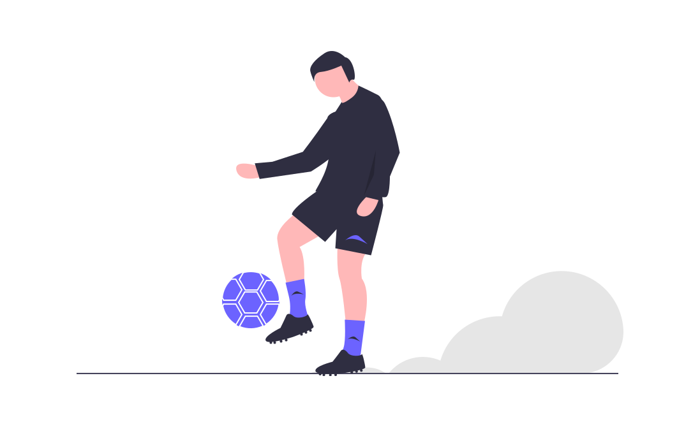

My Love for Football
In contrast to the article's title my first love was the sport of Cricket. I enjoyed everthing about Cricket, whether watching, playing or discussing. I remember as a child everyone living in my lane would gather in the middle of the street playing Cricket, it was some fun times. When the West Indies Cricket team was playing in was like a national event taking place, everyone would gather at two or three houses and watch the live games in large groups. The sounds of ooo's and ahhh's resonated through the lane from almost every household, those were memorable times. However, as time went by exciment that surrounded Cricket was slowly dying out (the reason for that might be a topic worth pursuing. The new sport had arrived in town, its name was Football.
From the day Football was introduced to me, you could say I had a natural talent on how to play the sport, it connected with me. I would spend hours each day juggling the football with my feet, kicking the ball on the wall as a partner in order to improve my control and technique. Would write more but I'm tired now. I'll continue this one another day, look out for part two!!!